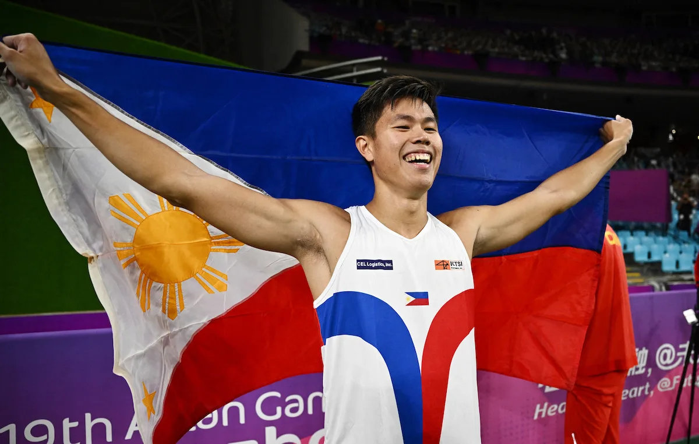

Philippine Sports Roundup

EJ Obiena: Athlete of the Year
If anyone can rightly claim the ‘Athlete of the Year’ title in the Philippines,
it is unquestionably 2023’s golden boy, Ernest John ‘EJ’ Obiena1.
His performance this year has been nothing short of spectacular,
making him the face of Philippine sports.
Philippine Sports Roundup
E-sports Craze: Mobile Legends M5 World Championship
The e-sports scene in the Philippines is booming, with over 4,000 fans turning out at the Rizal Memorial Coliseum to catch their favorite teams on the final day of the Mobile Legends M5 World Championship².
This event marks a significant milestone in the recognition and growth of e-sports in the country.
Philippine Sports Roundup
PBA: Robert Bolick Joins NLEX Road Warriors
In the Philippine Basketball Association (PBA), a new chapter begins for Robert Bolick as the high-scoring guard suits up for the NLEX Road Warriors³.
His move to the Road Warriors is expected to bring a new dynamic to the team and the league.